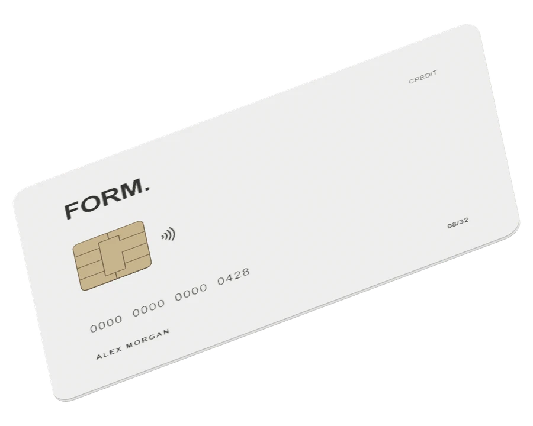

Inside the key, the card and the phone: a copper coil and a chip.

Those are the things you use every day.
and almost nobody knows how it works
Try an RFID scanOpen the project through a local web server to use the 3D demo. See the setup instructions.
Try an RFID scan.
Bring the card to the reader.
How It Works?
Take it apart
Everything you just saw happens faster than a blink.
Here it is, slowed down and taken apart. From here on, the card is the tag and the phone is the reader. Every number below is calculated as you change things.
Part one The power: how a field makes electricity
6
Closer is stronger
The field fades very fast with distance. A bigger coil catches more of it, which is why the card’s coil runs around its whole edge.
Real name: inductive coupling. A card must work in a field from 1.5 to 7.5 A/m (ISO/IEC 14443-2).
7
It has to keep flipping
Only a changing field makes electricity. The reader’s field flips 13.56 million times a second.
Real name: Faraday’s law of induction. The voltage is the speed of the change: V = ω · M · I.
8
The tuning trick
The coil and the tiny capacitor beside it swing together, like a child on a swing pushed at just the right moment. Tuned right, a weak field is enough.
Real name: resonance, f = 1 / (2π√LC). A card’s chip draws about 5 mW; a key’s about 75 µW, so the key leans on tuning far more.
9
Why metal fights back
Metal makes its own currents that push against the field, and it knocks the coil out of tune.
Real name: eddy currents and detuning. Modelled as a perfect conductor: a mirror image of the reader’s coil, with the current reversed.
10
Getting through the pauses
The phone talks by switching its field off for an instant. A chip with no battery has to survive every pause, a few millionths of a second long, on saved energy.
Real name: 100% ASK pauses, modified Miller coding. Each pause lasts about 2.4 µs.
Part two The answer: how a chip with no radio talks back
11
Soaking up more, then less
The chip never sends anything. It changes how much of the field it soaks up, and the reader feels the difference in its own coil.
Real name: load modulation.
12
Whispering next to a shout
The card’s answer is tiny next to the reader’s own field. So the chip flickers its dips 847,500 times a second. That moves its answer to a pitch the reader can pick out.
Real name: the subcarrier, 13.56 MHz ÷ 16 = 847.5 kHz.
13
Keeping count
With “dip for 1, quiet for 0”, a run of zeros is a flat line, and a reader whose clock runs a little fast loses count. With “every bit changes in its middle”, the count never slips.
Real name: Manchester coding.
14
Catching mistakes
A dip drowns and a 1 becomes a 0. A check bit on every byte and a check number on every message catch it, and the phone asks again.
Real name: odd parity bits and CRC_A (ISO/IEC 14443-3). The card also checks its own ID when the phone selects it.
15
The whole conversation
You’re not supposed to see this… But just this once, we’ll make an exception.
Every tap starts with the same six messages. The phone works out every bit from the dips alone: it never peeks at the card’s memory.
Real name: ISO/IEC 14443-3: REQA, ATQA, anticollision, UID, SELECT, SAK.
16
Two cards in one field
Both cards answer at once. Where their IDs differ, the reader hears a 1 and a 0 together: a clash. It picks one side, and the other card goes quiet. That’s why tapping a whole wallet can charge the wrong card.
Real name: bit-wise anticollision (ISO/IEC 14443-3). Transport for London calls it “card clash”.
17
Why your phone can’t read your car key
A reader and a tag have to be tuned to each other. The key is tuned to 125 kHz; the phone’s field flips at 13.56 MHz, about 100 times faster.
Real name: low frequency (LF, 125 kHz) and high frequency (HF, 13.56 MHz).